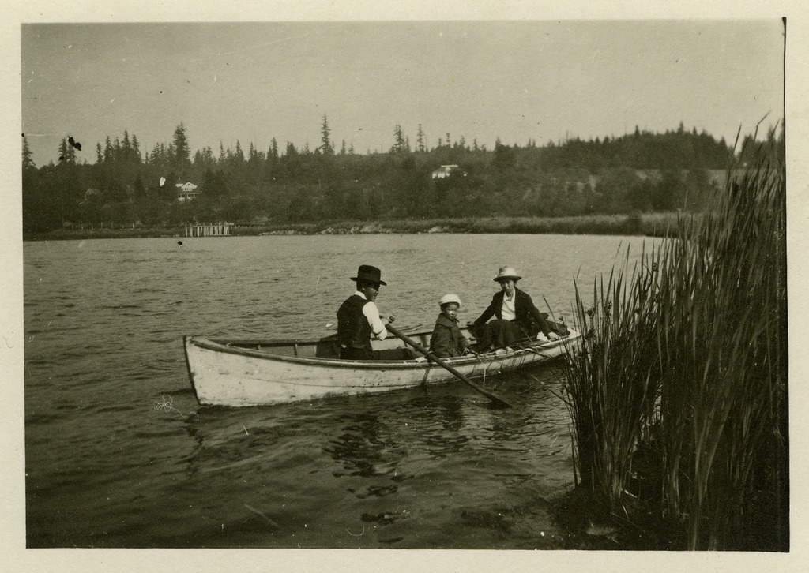
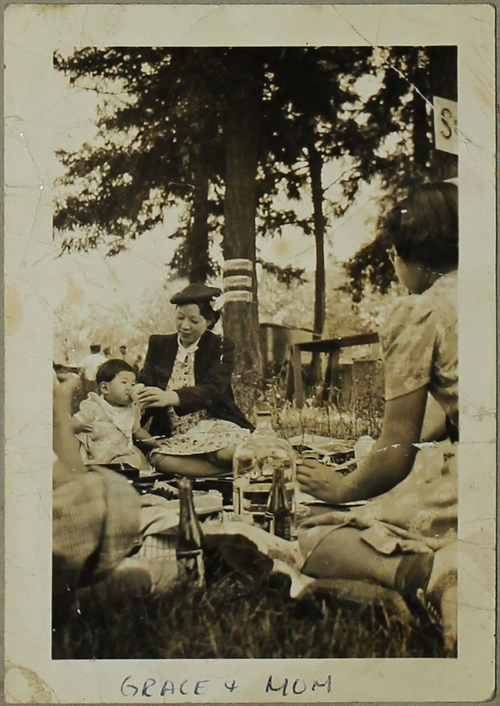

« Back to article Tulean Dispatch (newspaper)
From the Densho Digital Repository
Related topics and primary source items from the Densho Digital Repository.
Newspapers
-

Entity Title
This is the truncated description for the entity... View in DDR >> -

Entity Title
This is the truncated description for the entity... View in DDR >>
Sports & Recreation
Tule Lake
« Back to article Tulean Dispatch (newspaper)

© Densho 2014. This primary source is licensed under a Creative Commons Attribution-NonCommercial-ShareAlike 3.0 Unported License. More information »